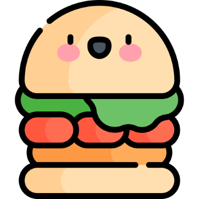

삼시쉽끼
그림 그리기
영양 정보
오늘 내 몸 안에 들어있는 음식은?

햄버거
이전
다음
칼로리: 200g당 527.67kcal
탄수화물: 43.34(22%)
단백질: 25/69(13%)
지방: 27.95(14%)
수분: 99.69g(50%)
식이섬유: 과일, 채소, 견과류를 드세요!
칼슘: 우유, 요거트, 치즈를 드세요!
비타민 D: 생선, 계란 노른자, 버섯을 드세요!
철분: 적정량의 콩, 콩나물, 삶은 계란, 씨앗, 견과류를 드세요!
영양 정보